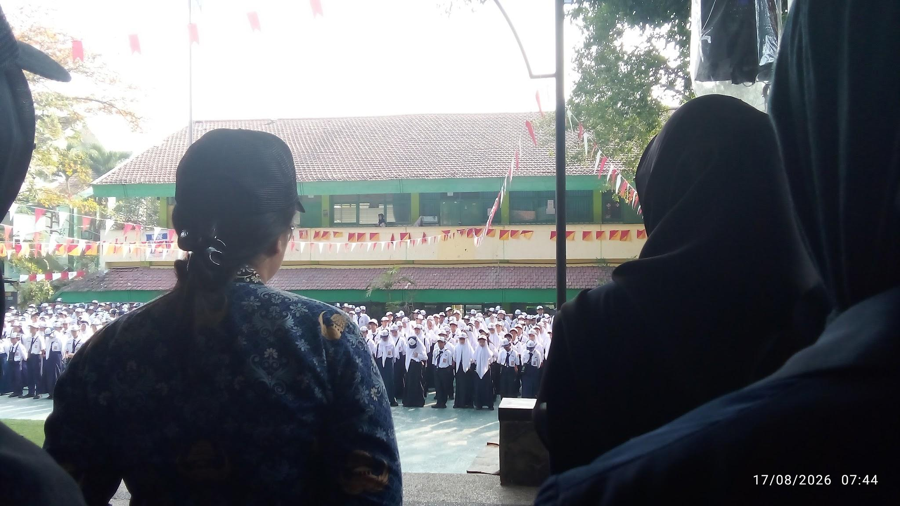
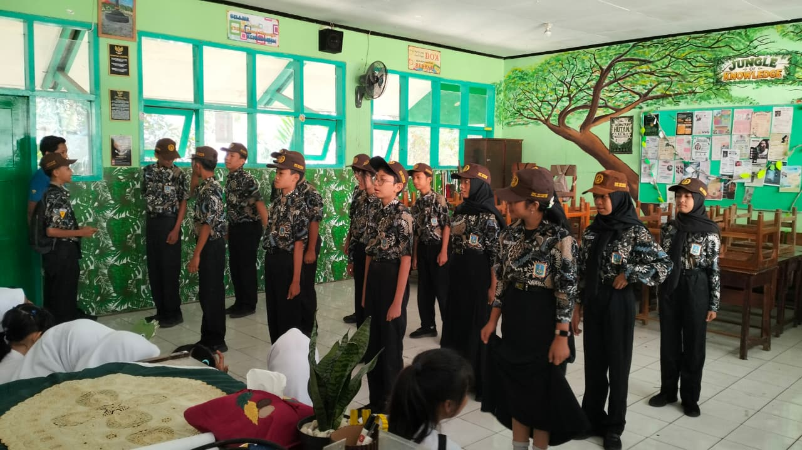
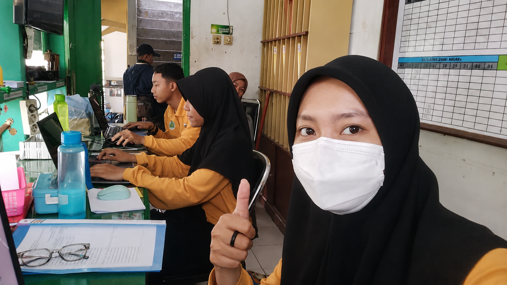

Deskripsi Kegiatan Mingguan
PPL PPG Calon Guru Pendidikan Teknik Informatika Gelombang 1 Tahun 2026
SMPN 18 Malang
Minggu 5
Nama : Siska Yulia Rahmawati
NIM: 253153743918
Hari/Tanggal |
Deskripsi Kegiatan |
Refleksi |
Senin/17 Agustus 2026 |
Upacara Hari Kemerdekaan Indonesia 81 |
Mengikuti Upacara Hari Kemerdekaan Indonesia ke-81 mengajarkan saya tentang makna perjuangan, nasionalisme, dan kebersamaan. Saya merasakan semangat patriotisme yang membangkitkan rasa cinta tanah air. Pengalaman ini mengingatkan saya untuk terus menghargai jasa pahlawan dan mengisi kemerdekaan dengan hal-hal positif. |
Selasa/18 Agustus 2026 |
Mendampingi perwalian kelas 8H |
Kegiatan mendampingi perwalian kelas 8H memberikan pengalaman dalam memahami kondisi dan karakteristik murid secara lebih dekat. Dari kegiatan ini, saya menyadari bahwa seorang guru tidak hanya berperan dalam menyampaikan pembelajaran, tetapi juga perlu memberikan perhatian, arahan, dan pendampingan kepada murid. Kegiatan ini menjadi pengalaman yang bermanfaat bagi saya untuk meningkatkan kemampuan dalam membangun komunikasi dan menciptakan hubungan yang positif dengan murid. |
Rabu/19 Agustus 2026 |
Stand by di ruang piket |
Kegiatan stand by di ruang piket memberikan pengalaman bagi saya untuk memahami berbagai aktivitas pendukung dalam pelaksanaan kegiatan sekolah. Selama berada di ruang piket, saya membantu memantau kondisi lingkungan sekolah dan memberikan pelayanan ketika terdapat kebutuhan atau informasi yang perlu ditindaklanjuti. Dari kegiatan ini, saya belajar bahwa peran guru tidak hanya terbatas pada kegiatan pembelajaran di kelas, tetapi juga mencakup tanggung jawab dalam menjaga ketertiban dan mendukung kelancaran aktivitas sekolah. |
Malang, 19 Agustus 2026 |
|
Guru Pamong
Ratna Agustyasari, S.Pd. NIP. 19890802 2019022001 |
Mahasiswa PPG Calon Guru Gelombang 1
Siska Yulia Rahmawati NIM 253153743918 |
Kepala Sekolah SMP Negeri 18 Malang
Mohammad Amrozi Hamidi, S.Pd., M.M NIP. 19681102 199203 1005 |
Lampiran
Tanggal |
Dokumentasi |
17 Agustus 2026 |
 Upacara Hari Kemerdekaan Indonesia |
18 Agustus 2026 |
 Mendampingi pewalian kelas |
19 Agustus 2026 |
 Standby di ruang piket |